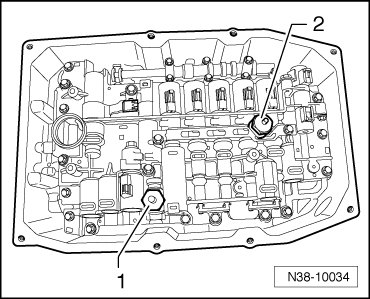

Fluid Pressure Sensor/Switch: Service and Repair
Hydraulic Pressure Sensors 1 and 2
• On transmissions that were built from 11.05, the hydraulic pressure sensor has been discontinued.
• Allocation.
Special tools, testers and auxiliary items required
• Torque wrench (VAG 1410)
Removing
Sensors must always be replaced together.
- If still installed, remove the oil filter. Refer to --> [ Oil Filter ] Service and Repair.
- Carefully pull off the connectors for automatic transmission hydraulic pressure sensor 1 (G193) - 1 - and automatic transmission hydraulic pressure sensor 2 (G194) - 2 -.

- Remove both sensors.
Installing
Sensors must always be replaced together.
- Install 2 new sensors and tighten to 5 Nm.
- Push the connectors onto the sensors - 1 - and - 2 - up to the stop.
The connectors must engage.
- Install oil filter. Refer to --> [ Oil Filter ] Service and Repair.
- After installation, fill with ATF, check ATF level, and top off. Refer to --> [ ATF Level Checking and Filling ] ATF Level Checking and Filling.